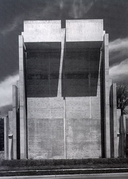
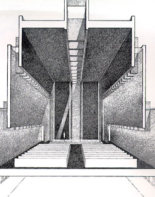
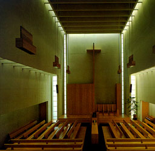

|
University Reformed Church, Ann Arbor, Michigan, 1963-1964 office of Birkerts & Straub  GA Architects 2 William Marlin & Yukio FutagawaA.D.A. EDITA Tokyo |
In this design de architect has tried to prevent complexity in conception and detailing. He only used basic materials such as wood, concrete, brick and glass. Where the materials were in contact with persons he used wood as a 'human' element in the building. Thin beams span length-wise as you can see on the right picture. Between the beams fins are placed which form a reflector for daylight, so incoming daylight never enters the church directly. On the other picture on the right a photograph of the interior can be seen. The reflected daylight enters the building at three heights and lightens up the in a equal way. |
  |